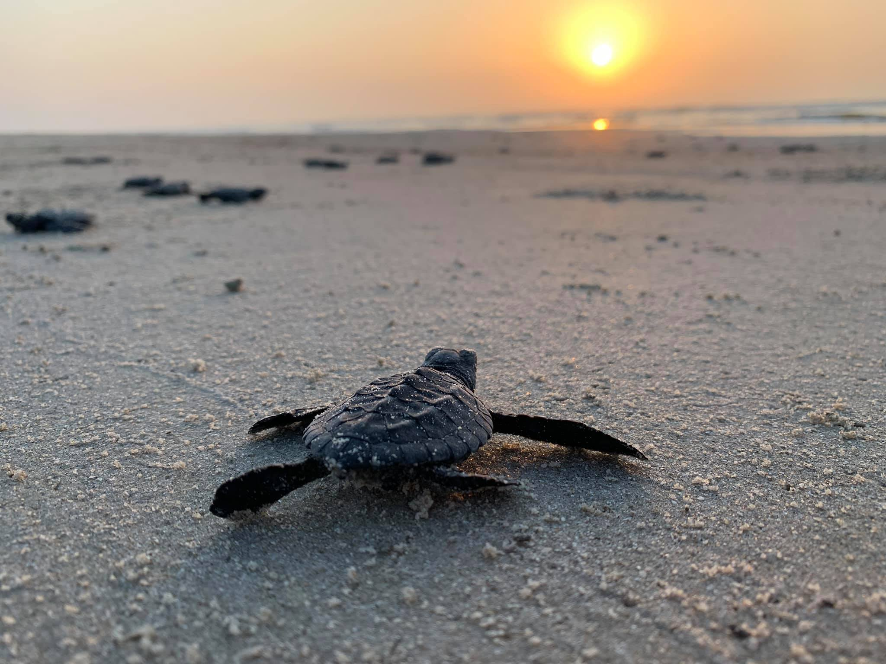

|
|
|---|---|
| Opening Hours 8 am - 7 pm Visit between April - july for the nesting season |

|

|

|
|---|---|---|
|
 |


| Discover | Comapany |
|---|---|
| Turtle Species | About us |
| Turtle Hatcheries | Contact |
| Threats to Turtle | |
| Support | |
| Educational Resources | Purchace and Donate |